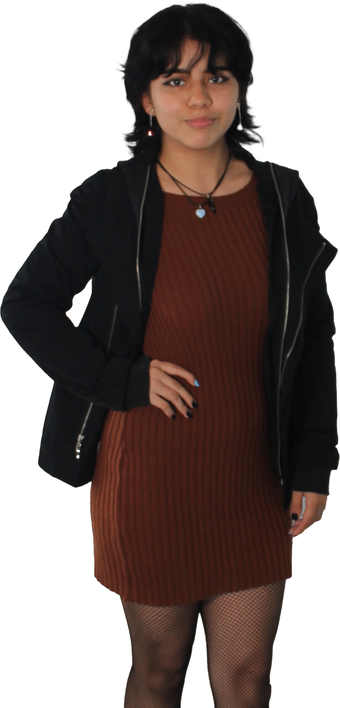

¿QUIÉN SOY?
Maria Fernanda Ussa
Soy Ilustradora y Productora Multimedia, especializo en más en Area del diseño sin dejar de lado mis conocimientos en el Desarrollo Web y Marketing Digital. Tengo gran creatividad y me gustan mucho los colores y formas, dan personalidad tambien soy amante de los animales, me gusta manejar un estilo simple y natural.
¿Cual es mi logo?

Mi maraca personal trata de un gato color azul con una mancha amarilla la cual es pintura sus gestos y colores quieren hacer sentir a los clientes en un ambiente amigable y social.